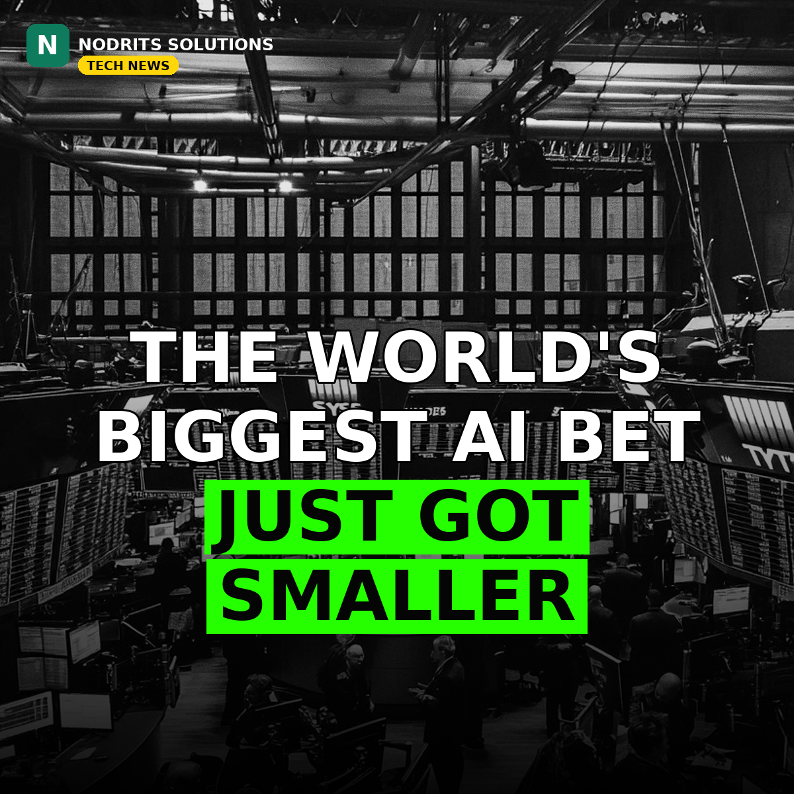

OpenAI Slashes Its Funding Target by $10 Billion as Investors Pull Back

OpenAI has cut the target for its latest funding round by $10 billion. The ChatGPT maker is now seeking about $20 billion at a $1.25 trillion valuation, the Financial Times reported on Friday, October 30, according to Reuters — down from the $30 billion at a $1.4 trillion valuation that Reuters had reported earlier in October. The first close of the round is expected to land below $20 billion, after some investors reduced their allocations.
What happened
According to the Financial Times report, carried by Reuters, OpenAI set a Friday deadline for investors to commit to the round. Even so, the first close is expected to come in under $20 billion because some investors trimmed what they planned to put in. OpenAI did not immediately respond to a request for comment outside regular business hours.
This is a new development in the funding round Nodrits covered on October 23, when the plan stood at $30 billion. Reuters has reported that OpenAI was racing to secure commitments before rival Anthropic's expected public-market debut in mid-November, with both frontier labs tapping a similar investor base. Other reporting picked up this month has said Nvidia scaled back an earlier plan to invest up to $100 billion in OpenAI to $30 billion in the current round, and that SoftBank's piece shrank from $30 billion to $20 billion — both attributed to people familiar with the matter, not confirmed by the companies.
The cut lands against a rough backdrop for AI stocks. US tech shares slid on Friday, with the Nasdaq falling 2.9%, as investors questioned whether the massive spending on AI infrastructure will pay off fast enough. For scale: OpenAI closed a $40 billion SoftBank-led round at a $300 billion valuation earlier this year, and the Financial Times had previously reported its annualized revenue run rate at close to $50 billion at the end of September.
Why it matters
A $10 billion haircut on the world's most-watched private financing is a signal, not just a number. It suggests that even OpenAI — the company that defines the AI boom — cannot simply name its price when markets turn nervous. When the biggest name in AI has to shrink its ask, every other AI startup raising money will feel the same chill, and valuations set during the boom will be re-tested.
It also sharpens the race with Anthropic. Both labs are competing for the same deep-pocketed backers, and Anthropic's public debut, reportedly targeting a raise of as much as $100 billion at a $1.5 trillion valuation, will set the next reference price for the whole sector. If OpenAI's first close lands below $20 billion, it hands Anthropic's bankers a tougher story to tell — and gives every investor a fresh reason to wait.
What it means for you
If you build on AI, don't read this as "AI is over." Read it as "AI money is getting pickier." Expect model providers to push harder on enterprise revenue, pricing discipline and proof of return — which is good news if you buy AI tools, because vendors will have to earn renewals. If you run a startup, the lesson is blunter: raise while you can show revenue, not just a roadmap, because the era of funding on vision alone is cooling fast.
The Nodrits take
The AI boom isn't ending — it's repricing. A $1.25 trillion valuation is still staggering; the story here is that even staggering now comes with a negotiation. The winners from here won't be the labs that raise the most, but the ones that turn compute into cash flow.
Is OpenAI's smaller round a healthy correction — or the first crack in the AI boom? Drop your take below.
Need a website, SaaS product or AI workflow built right?
Nodrits Solutions designs, develops and automates for businesses in Pakistan, the USA, UK, UAE and Saudi Arabia.
Talk to Nodrits →Sources: Reuters, "OpenAI cuts funding target by $10 billion, FT reports" (October 30–31, 2026), citing the Financial Times; Finimize and CoinDesk coverage of the FT report; Startup Fortune's summary of the FT reporting, including the Nvidia and SoftBank details. Published October 31, 2026.